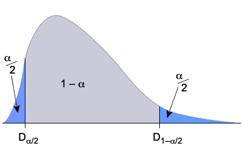

Assumption of normality
Wald-type confidence intervals need \(\hat{\theta}\) to be approximately normally distributed. Although this usually holds for large enough sample sizes, it is often violated when the sample size is small.
A better type of confidence interval avoids the need to assume normality. It is based on a random quantity called a pivot.
Definition
If a random sample, \(\{X_1, X_2, \dots, X_n\}\) is selected from a distribution with unknown parameter \(\theta\), a pivot is a function of the data and \(\theta\) whose distribution is fully known (and therefore does not involve unknown parameters),
\[ g(\theta, X_1, \dots, X_n) \;\;\sim\;\; \mathcal{Distn} \]Since the distribution \(\mathcal{Distn}\) has no unknown parameters, its quantiles are constants that we can evaluate. For a \((1 - \alpha)\) confidence interval, we need the quantiles giving probability \(\dfrac{\alpha}2\) in each tail of the distribution.

For example, if the pivot had a \(\NormalDistn(0, 1)\) distribution, for a 95% confidence interval, we would find the quantiles \(D_{2{\frac 1 2}\%} = -1.96\) and \(D_{97{\frac 1 2}\%} = +1.96\).
Confidence interval
From how we defined these quantiles,
\[ P\left(D_{\alpha / 2} \;\lt\; g(\theta, X_1, \dots, X_n) \;\lt\; D_{1 - \alpha / 2} \right) \;\;=\;\; 1 - \alpha \]We can therefore define a \((1 - \alpha)\) confidence interval to be the values of \(\theta\) such that
\[ D_{\alpha / 2} \;\;\lt\;\; g(\theta, x_1, \dots, x_n) \;\;\lt\;\; D_{1 - \alpha / 2} \]Since there is a probability \((1 - \alpha)\) of this holding for a random sample from the distribution, the resulting confidence interval has confidence level \((1 - \alpha)\).